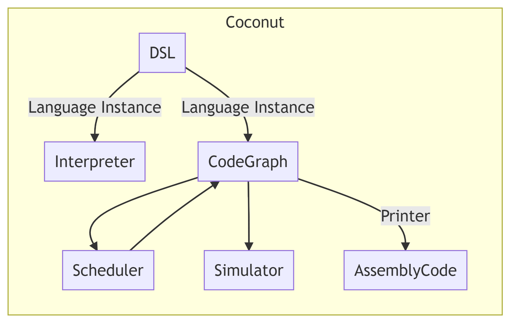
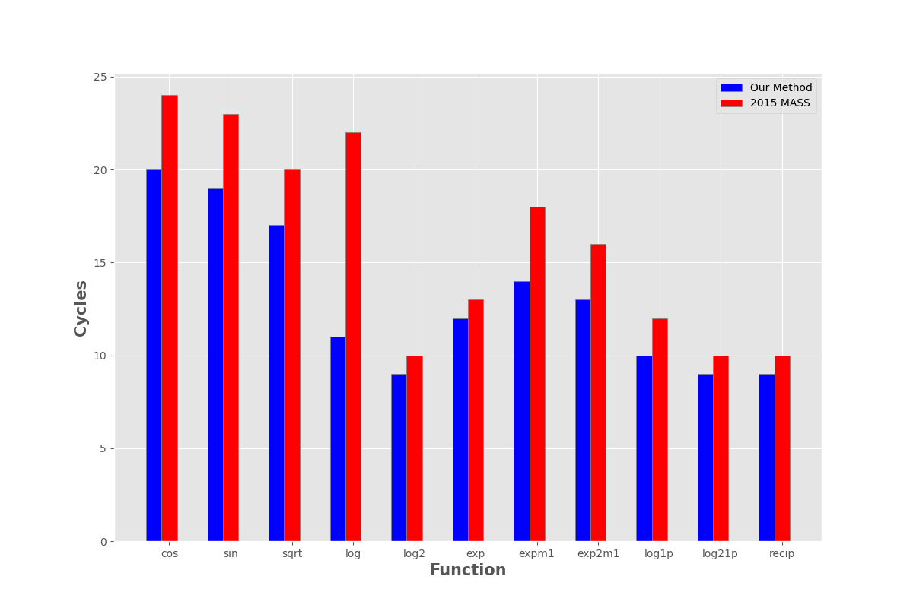

Stochastic Algorithms for Instructions Scheduling Emphasis on:

COCONUT:( COode CONstructing User Tool )
class CoreISA r where unintegerG :: Integer -> r GPR unintegerV :: Integer -> r VR add :: r GPR -> r GPR -> r GPR mult :: r GPR -> r GPR -> r GPR vadd :: r VR -> v VR -> v VR ...
sampleDSL :: CoreISA r => r GPR -> r GPR -> (r GPR,r GPR) sampleDSL r1 r2 = let r3 = add r2 r1 r4 = add r3 r1 r5 = add r4 r2 in (r5,r4)
We can encode basic blocks in the Coconut DSL
Continuous Optimization Model For Modulo Scheduling
NOTE: dispatch and completion times are designed to model OoO (Out of Order) execution machines
Key Idea: Encode choice heuristics as penalties, adjust preference between heuristics by scaling
IDEA use random variables to scale penalties

lifeTimePenalty :: Hardware h => Double -> HashedData h -> [TypedExpr Scalar R] lifeTimePenalty scale hashedData = let instructions = hdAllInstructions hashedData tVars = tVarMap hashedData cVars = cVarMap hashedData in map (\n -> scale * (cVars ! n - tVars ! n)) instructions
We can easily encode our Lifetime Penalty from before
curtisda@ca.ibm.com